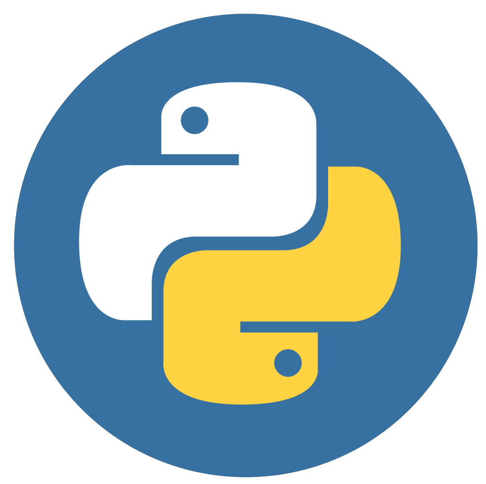

Olá, me chamo
Hi, my name is
KELVIN ARAÚJO
Sou desenvolvedor Front apaixonado por criar experiências interativas e gamificadas na web. Combinando design envolvente com análise de dados, transformo conceitos em interfaces cativantes e funcionais
I'm a Front-end developer passionate about creating interactive and gamified experiences on the web. Combining engaging design with data analysis, I transform concepts into captivating and functional interfaces.
SOBRE MIM
ABOUT ME
Frontend com paixão por experiências web gamificadas. Minha jornada une design envolvente e análise de dados, resultando em interfaces interativas e funcionais.
Frontend with a passion for gamified web experiences. My journey combines engaging design and data analysis, resulting in interactive and functional interfaces.
Abaixo, descrevo algumas características-chave desse profissional:
Below, I describe some key characteristics of this professional:
- Experiência técnica sólida: Um bom desenvolvedor de sistemas web possui um amplo conhecimento e experiência prática em diversas tecnologias web, como linguagens de programação (por exemplo, JavaScript e Python), frameworks (React, Flutter e Angular), bancos de dados (MySQL, PostgreSQL, MongoDB) e experiência com Power BI.
- Solid technical experience: A good web systems developer has a broad knowledge and practical experience with various web technologies, such as programming languages (e.g., JavaScript and Python), frameworks (React, Flutter, and Angular), databases (MySQL, PostgreSQL, MongoDB), and experience with Power BI.
- Adaptabilidade: Esse desenvolvedor está sempre disposto a aprender novas tecnologias e ferramentas, mantendo-se atualizado sobre as tendências do setor. Sua capacidade de se adaptar rapidamente a novos ambientes e metodologias é crucial para enfrentar novos desafios.
- Adaptability: This developer is always willing to learn new technologies and tools, staying updated on industry trends. Their ability to quickly adapt to new environments and methodologies is crucial for tackling new challenges.
- Criatividade e pensamento inovador: Ao buscar novos desafios, esse profissional tem uma mente criativa e pensa fora da caixa para propor soluções originais e eficientes para problemas complexos.
- Creativity and innovative thinking: When facing new challenges, this professional has a creative mind and thinks outside the box to propose original and efficient solutions for complex problems.
- Trabalho em equipe: Ser capaz de colaborar efetivamente com outros membros da equipe é fundamental. Esse desenvolvedor é aberto a feedback, compartilha seu conhecimento com os colegas e está disposto a contribuir para o sucesso coletivo do projeto.
- Teamwork: Being able to collaborate effectively with other team members is crucial. This developer is open to feedback, shares their knowledge with colleagues, and is willing to contribute to the collective success of the project.
- Boas práticas de desenvolvimento: Um bom desenvolvedor de sistemas web segue as melhores práticas de codificação, como escrever código limpo, modular e bem documentado. Além disso, ele compreende a importância dos testes automatizados para garantir a qualidade do software.
- Good Development Practices: A good web systems developer follows coding best practices, such as writing clean, modular, and well-documented code. Additionally, they understand the importance of automated testing to ensure software quality.
- Resolução de problemas: Diante de desafios complexos, esse profissional mantém a calma e aborda os problemas de maneira sistemática. Ele é capaz de analisar, depurar e encontrar soluções eficazes para problemas técnicos e de negócios.
- Problem Solving: In the face of complex challenges, this professional remains calm and approaches problems systematically. They are capable of analyzing, debugging, and finding effective solutions to technical and business problems.
- Orientação para o usuário: Ao desenvolver sistemas web, o foco no usuário é essencial. Um bom desenvolvedor considera a experiência do usuário em todas as etapas do processo, buscando criar interfaces amigáveis e funcionais.
- User-Centric Approach: When developing web systems, a user-centric focus is essential. A good developer considers the user experience at every stage of the process, aiming to create user-friendly and functional interfaces.
- Autonomia: Esse profissional é proativo e capaz de trabalhar de forma independente, assumindo a responsabilidade por suas tarefas e entregas. Ele está sempre em busca de oportunidades para contribuir além de suas atribuições imediatas.
- Autonomy: This professional is proactive and capable of working independently, taking responsibility for their tasks and deliveries. They are always seeking opportunities to contribute beyond their immediate assignments.
- Paixão pela tecnologia: Acima de tudo, um bom desenvolvedor de sistemas web é apaixonado pela tecnologia e pelo processo de criação. Essa paixão impulsiona seu desejo de enfrentar novos desafios, aprender continuamente e entregar soluções excepcionais.
- Passion for Technology: Above all, a good web systems developer is passionate about technology and the creation process. This passion drives their desire to tackle new challenges, continuously learn, and deliver exceptional solutions.
SKILLS
SKILLS

HTML

CSS

JavaSript

Github

VSC

Python